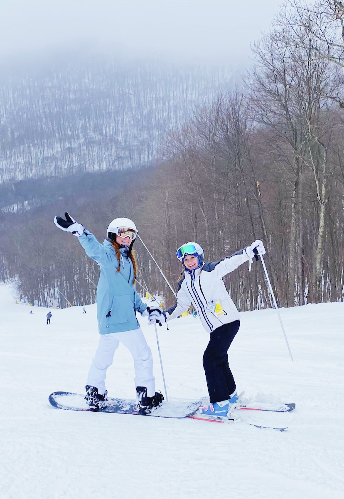
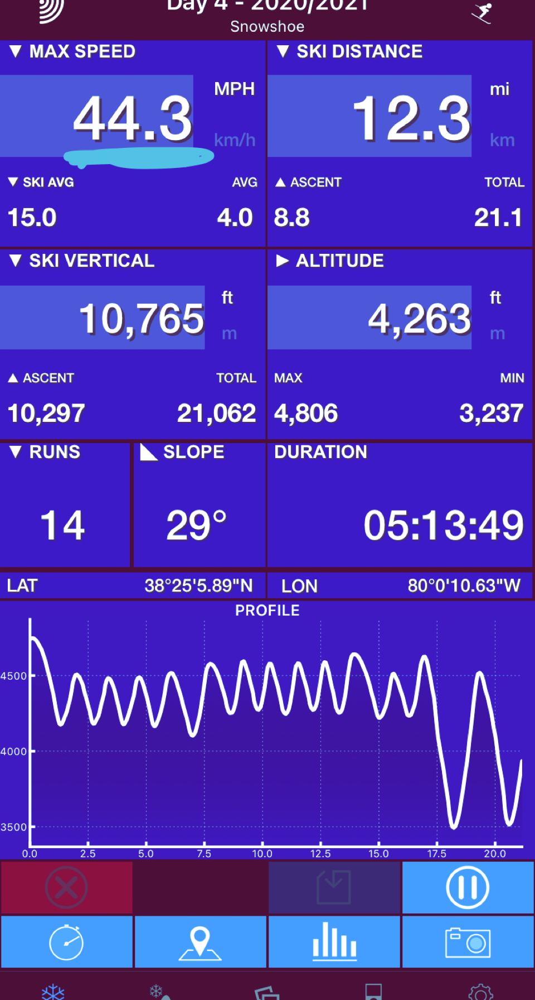
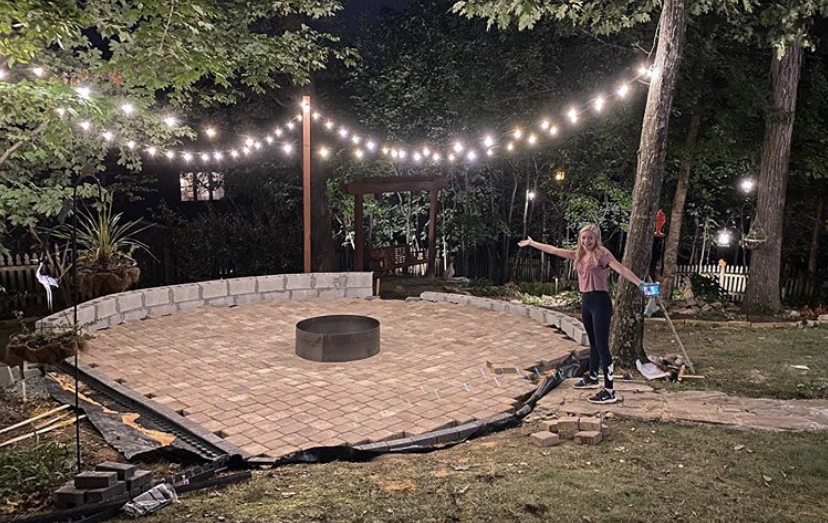
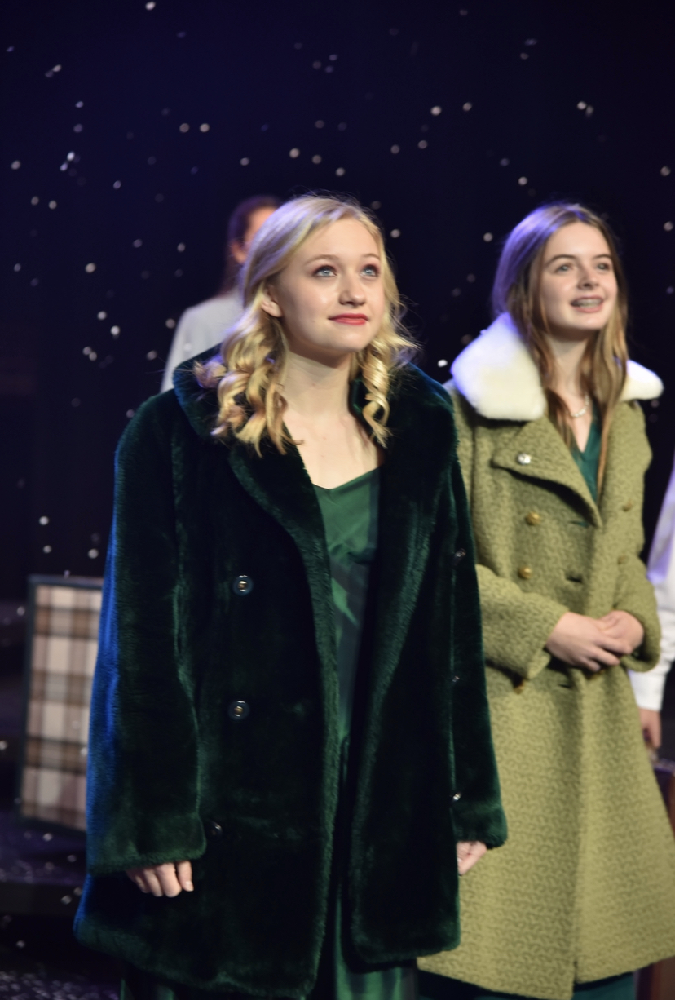
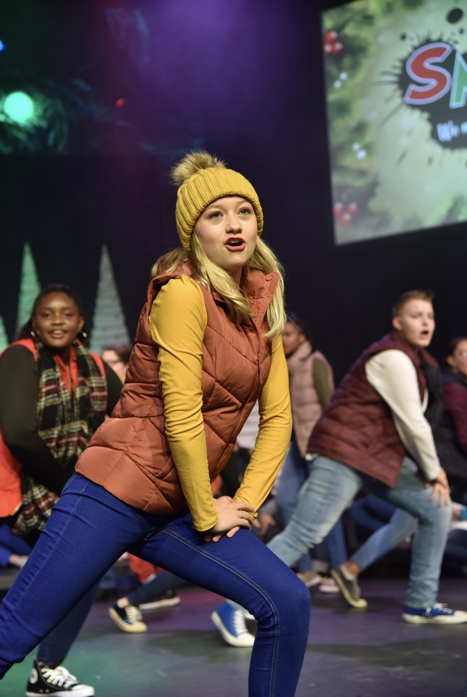

Snowshoe Trip 2021


My family and I got to see my cousins for the first time since the summer.We left after school on Tuesday to go to Snowshoe in West Virginia. I just got my own pair of ski boots and skis so that I don't have to rent them anymore. Learning to ski at a young age of 4, we thought it was time that I got my own. On Wedndsay, Thursday, and Friday, we skied for around 7 hours from 9 am to 4 pm. On Thursday, I finally beat my all time fastest speed of 44.3 mph!
How We Delt With Boring Covid Times
Most people were very bored during lockdown, but we tried not to stop our busy schedules! Right after we were all forced to stay in our homes, we got right to work in our house. We painted our entire house, along with cleaning out and rearranging each bedroom. After that, we decided to clean up our backyard's pond. When it was all clean, we bought some goldfish and coy fish to add to the pond. Next, we had been talking about adding a firepit/patio on the other side of our backyard. It took months, but we finally finished and have firepits all the time!
SMACK Christmas Show


Sadly, I wasn't able to be in that many shows this year because of covid. For the past three years, I have been participating in SMACK (Summer Musical Art Camps for Kids). We put on productions every summer and fall. We weren't sure if we were going to be able to do it this year, but we made it work. We all had to wear masks for all rehearsals, minus the recording of the show. Since there would be too many people, we couldn't have an in person performance. We had to record it instead and livestream it a couple weeks later. It was still a fun experience.